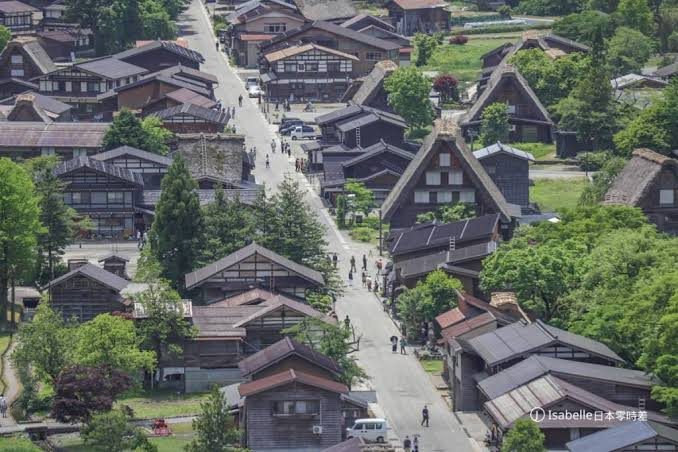

Day 1
桃園出發，前往高山老街
這一天是抵達日，重點放在高山上三之町的古街散策。整體氛圍像走進保留完好的江戶街區，適合慢慢逛、慢慢拍。活動註記：高山夏季通常以街區散策為主，若出發前有臨時市集或夜間活動可再加註。

中部國際機場抵達名古屋的空中門戶來源：本機圖片

中部國際機場機場內部與旅程起點來源：本機圖片

高山老街街景整個街區本身就是景點來源：本機照片
旅行日期為 2026/08/25(二) 到 2026/08/29(六)。這份頁面依照原始行程順序整理，已保留景點與住宿候選，並補上航班資訊與活動註記。照片改為內嵌圖卡，不依賴外站載入，因此在你的 in-app browser 裡也能穩定顯示。
照著順序看，就能快速掌握每天的旅遊重點
這一天是抵達日，重點放在高山上三之町的古街散策。整體氛圍像走進保留完好的江戶街區，適合慢慢逛、慢慢拍。活動註記：高山夏季通常以街區散策為主，若出發前有臨時市集或夜間活動可再加註。
這天是本行程的經典文化日，從世界遺產到日本三大名園，再到保存完整的東茶屋街，風景層次非常豐富。活動註記：白川鄉與金澤多以街景、庭園與手作體驗為主，8 月通常沒有固定大型祭典；若你想加活動，可優先留意當週夏季市集公告。



若行程落點往富山，這是同級住宿備案。
這天的節奏非常多元，從郡上八幡的清流街景、犬山城的古城天守，到名古屋市區的夜間購物，兼具歷史與城市感。活動註記：郡上八幡夏季的「郡上踴」夜間踴舞會期一路到 9 月上旬，8/25 前後很有機會還能遇到；名古屋城夏祭通常在 8 月上旬，這天若已結束就以市區散策為主。


住宿候選之一，若想泡湯型飯店可列入。
這一天我最推薦名古屋中央塔樓、榮町商圈與大須商店街的組合，最順也最不累。活動註記：若你在 8 月下旬想找節慶感，可留意名古屋城周邊夏季活動與商圈夜間活動公告。


最後一天安排購物中心很合理，適合補伴手禮、整理行李與吃最後一餐，再前往機場返台。活動註記：這天通常以移動與購物為主，請保留前往機場的緩衝時間。


這一區是依你的行程地帶整理的 TAMIYA 官方店鋪清單，優先挑出有電動 RC、RC 賽道或 RC 相關販售的地標。住宿未定時，我把靠近金澤、名古屋與高山動線的店一起列上，方便你之後決定住哪裡時直接接上。
你還沒確定最後住宿，所以我先把金澤與名古屋最實用的購物地標一起標上。這些點都比較適合在住哪裡尚未定案時先預留，等飯店確定後，就能直接挑最近的一兩個去逛。
金沢市堀川新町3-1 金沢フォーラス4階。和金澤 FORUS 同棟，若你住金澤或在車站周邊，這是最順的鋼彈模型地標。
愛知県名古屋市中区大須4-2-48。位於熱鬧的大須商店街內，3 樓有遙控車專區，販售 Tamiya、Kyosho Mini-Z 等 RTR / 套件與基本耗材，也有 Mini4WD 與塑膠模型；地鐵上前津站步行約 7 分鐘，時間有限時最方便。